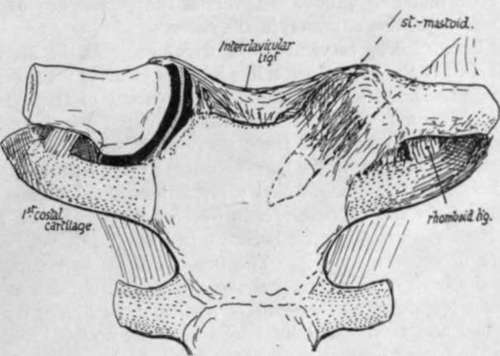

Upper Limb. Part 2
Description
This section is from the book "The Anatomy Of The Human Skeleton", by J. Ernest Frazer. Also available from Amazon: The anatomy of the human skeleton.
Upper Limb. Part 2
The security of the joint depends on these two connections, so that the remaining capsular fibres are comparatively weak and loose, particularly below and in front: the joint is supported in front by the sternal head of Sterno-mastoid passing over it, and the capsule is strengthened behind by the origin of Stesno-hyoid from it, extending out from it on to the back of the clavicle. A certain amount of antero-posterior movement, and even of very slight rotation, is possible in addition to elevation (see under " Scapula ").
The markings of the acromioclavicular ligaments are slight because these ligaments are feeble, though the upper ones are strengthened by fibres derived from the Trapezius. The security of the joint really depends on the coraco-clavicular ligaments, and especially on the trapezoid fibres, whose direction enables them to withstand the upward and outward movement of the clavicle on the scapula that is necessary to allow dislocation of the bone. The conoid ligament is not placed obliquely, and it is necessary, when endeavouring to articulate the two bones and place them in their proper relative position, to ensure that the conoid tubercle on the clavicle is immediately over that on the base of the coracoid process of the scapula (see Fig. 51).*
There is a smooth area on the bone (Fig. 53) behind the trapezoid ridge, under which the Supraspinatus plays, particularly if the arm is inverted-this is shown in Fig. 51-and under certain circumstances the subacromial bursa may extend under this surface of the bone.
The insertion of Subclavius extends (Fig. 53) well in front of the conoid ligament. The muscle is enclosed by the costo-coracoid membrane, indicated in the figure by thick black lines, and this attachment of the membrane to the bone can usually be traced by the finger, extending from the rhomboid to the coraco-clavicular impressions : the membrane is attached at its margins to the corresponding ligaments.
* For action of the ligaments and movements in this joint, see under " Scapula," p. 78.
Fig. 52.-Diagram of sterno-clavicular joint, opened on one side to show the meniscus dividing it into two cavities.
The extent of the muscle insertion is constant, and does not necessarily correspond with the length of the groove : the floor of the groove may present a ridge for an intramuscular tendon.
The Pectoralis major and Sterno-mastoid take origin from the clavicle by mixed tendinous and muscular fibres, so that their area can be found and followed with the eye and finger on any full-grown bone. The two areas are visible on the front (Fig. 54) aspect of the bone, where the lower pectoral surface is seen to extend further out than the upper one for the Sterno-mastoid : the latter surface is on the upper and front and the pectoral area on the front and lower aspect of the inner part of the shaft. Turn the bone up and follow the pectoral surface on its lower aspect, and it will be seen (Fig. 53) that it extends back to come into relation with the rhomboid ligament and costo-coracoid membrane.
The attachments of Trapezius behind and Deltoid in front are plainly visible on the outer third of the bone. A little interval exists between the Pectoral and Deltoid origins, and here a communication between the cephalic vein and the external jugular may cross the bone and may groove it : this is the persistence of a large venous channel that is present in this situation in the embryo.
The vaginal layer of deep cervical fascia, which encloses the Sterno-mastoid and Trapezius, is attached to the bone along a line joining the areas for these two muscles : there is no definite marking for it on the bone. In front of this hne the clavicle is covered only by Platysma and superficial tissues, and crossed under this by the descending cervical nerves : some of these nerve filaments may groove the bone or even pierce it, and their relation to the bone accounts for the excessive pain and tenderness that sometimes accompany and follow slight lesions of the bone.
The inner curve in the clavicle arches over and protects the axillary sheath. The relation of the sheath to the bone is shown in Fig. 51 : it lies behind and below it and not quite in contact with it. The omohyoid fascia comes down into the groove between the back of the bone and the sheath and obtains attachment to this aspect of the bone, low down on its posterior surface : the line of its attachment lies between the conoid and rhomboid impressions, and the double-layered fascia passes externally on to the conoid ligament and so reaches the base of the coracoid process of the scapula and the suprascapular hgament. Internally, the two layers separate at the rhomboid impression, the deeper one passing down the rhomboid ligament to reach the cartilage of the first rib below the origin of Sterno-thyroid, while the superficial layer runs inwards along the back of the clavicle above the origin of Sterno-hyoid to reach the top and back of the manubrium. In this way the central infrahyoid muscles are included between the layers as well as the (lateral) omohyoid, so that all the muscles of this group are in one sheet or morphological plane.
Continue to:
- prev: Upper Limb
- Table of Contents
- next: Upper Limb. Part 3